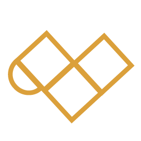

<!-- <ion-header>
  <ion-navbar>
    <ion-title>parabens-local</ion-title>
  </ion-navbar>
</ion-header> -->

<ion-content padding>

  <section class="fdba-page--parabens-local__parabens">
    <fdba-parabens type="parabens" titulo="<b>PARABÉNS!!</b>" descricao="Você me achou!"></fdba-parabens>
  </section>

  <section class="fdba-page--parabens-local__imagem">
      
      
      <div class="fdba-page--parabens-local__imagem__neon2">

      </div>
  </section>

  <section class="fdba-page--parabens-local__botao">
      <fdba-button type="transparente-branco-grande" buttonText="me conheça melhor"></fdba-button>
  </section>

</ion-content>
